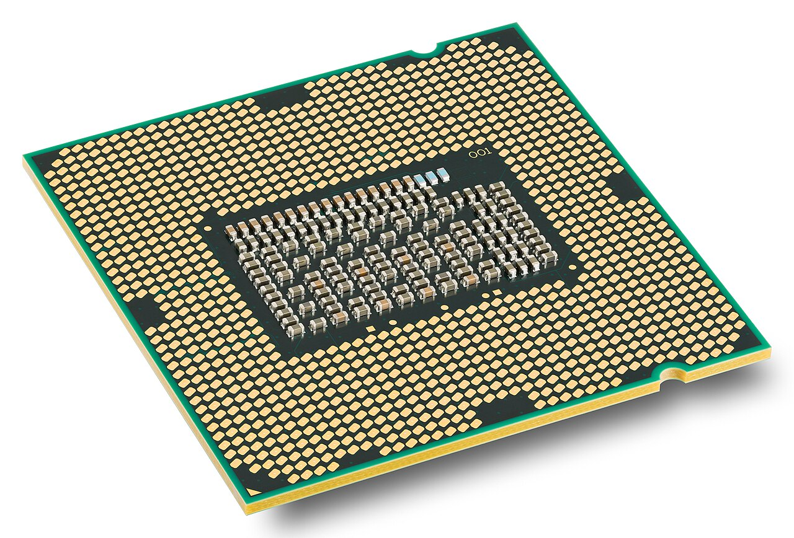
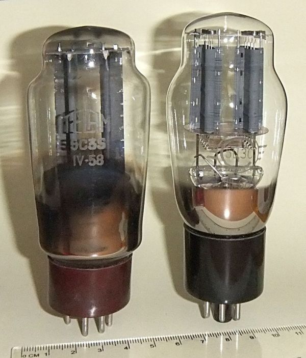
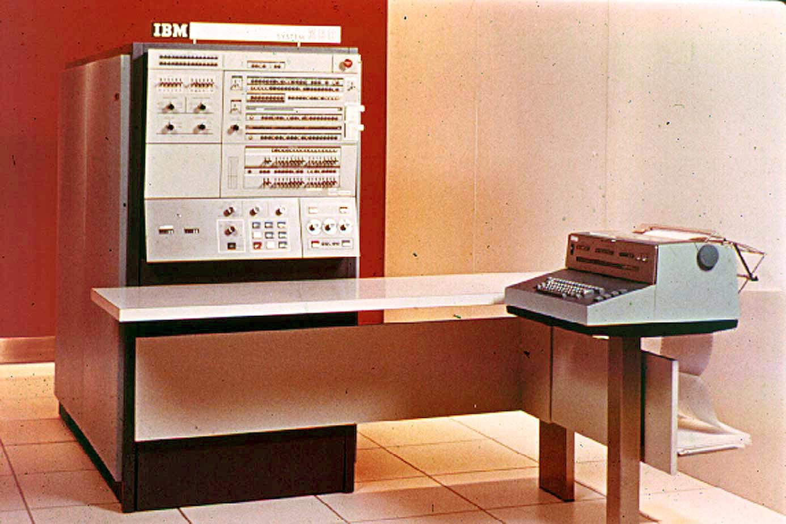
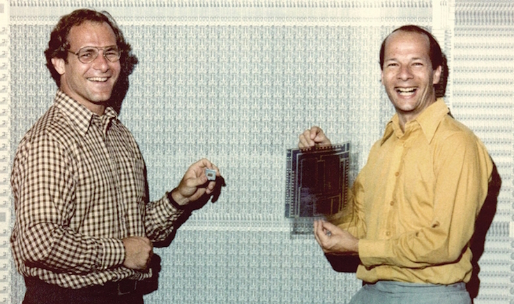
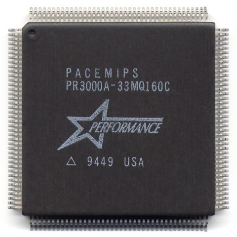
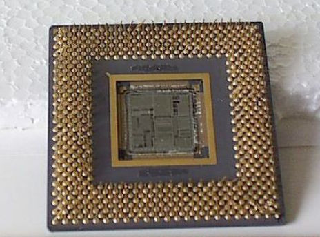

История процессоров
Процессор (CPU, центральное обрабатывающее устройство, центральный процессор) ― электронный блок или интегральная схема, предназначенное для выполнения машинных инструкций (кода программы). Центральный процессор является главной частью всего компютера.
Термин центральное процессорное устройство описывался изначально как система элементов, выполняющие машинный код (программа), а не только фиксированные логические команды.
Главными характеристиками центрального процессора являются: тактовая частота, производительность, энергопотребление, нормы литографического процесса и архитектура
История процессоров
1940-е
В 1940-е годы процессоров, как таковых не существовало. Вместо них учёные использовали электромеханическое реле и вакуумные лампы. Лампы выполняли роль диода, которые регулировались при помощи повышения или понижения напряжения в цепи. В сумме эти лампы соединённые проводниками представляли собой первый процессор. Такие "процессоры" использовадись в первых компьютерах мира.
В таких компьютерах было очень много таких ламп и они потребляли большое количество электроэнергии. Они были ненадёжными и выделяли много тепла оттуда и трата большого количества электричества. Перед учёными вставал вопрос: как сделать потребление энергии меньше, а работу процессора ускорить?
1950-е
В 1950-е годы вакуумные лампы постепенно заменяются транзисторами. Они образовывали стойки, и для процессора нужно было несколько таких стоек. В отличии от вакуумных ламп, транзисторы имели большую надёжность и потребляли меньше энергии, а также увеличилось быстродействие.
1960-е
В 1960-х началось использование микросхем и интегральных схем. Они содержали простые транзисторные и резисторные сборки. Сам процессор состоял из нескольких таких схем. С развитием процессоров всё больше транзисторов стали размещать на кристалле, из-за чего в процессоре интегральных схем становилось всё меньше. Позднее использовались микросхемы, реализующие отдельные элементы схемотехники.
Архитектура процессоров в 1960-х была далека от современных, однако план работы с компьютером становился похожим на сегодняшний. Приблизило это компьютер IBM System/360. До этого все компьютеры использовали тот код, который специально был написан для данного компьютера. В компьютере IBM, и уже других компьютерах данной линейки, начали использовать один набор комманд, что способстовало написанию ПО для работы с любой модификацией System/360.
Тогда же впервые был реализован байт в качестве 8 бит, до этого байт был 6-битный. Также впервые была реализована 32-битная система.
1970-е
В этот период появляются микропроцессоры. Это микросхемы, все элементы которого расположенны на одном кристалле. Первым микропроцессором стал Intel 4004, разработанный для микрокалькуляторов в 1971 году. Инженерам удалось разместить 2250 транзисторов на одном кристалле, каждый транзистор был размером 10 микрометров. Сам процессор работал на частоте 108 кГц (92600 операций в секунду). Частота его синхронизации была 740 кГц. При этом площадь кристалла составляла 12 мм2.

Следующий процессор Intel 8008 был 8-битным, он разрабатывался одновременно с 4004. Он уже имел 3500 транзисторов, однако скорость была ниже чем у 4004.

В дальнейшем почти все процессоры становились микропроцессорами. Они удешевили производство процессоров, были более надёжными чем их предшественники и потребляли в разы меньше электроэнергии. Производство микропроцессоров открыли путь к созданию персональных компьютеров, которые стали доступными для многих людей.
Размер транзисторов со временем уменьшался до 6 мкм, потом до 3 мкм и так далее. Скорость становилась выше, память процессоров больше, количество транзисторов начало исчисляться в 10 и 100 тысячах.
1980-е по наше время
В 80-х годах началось появление новых архитектур процессоров. Одной из первых архитектур стала RISC. В ней инструкции были упрощены, из-за чего работа процессора стала быстрее. Основателями архитектуры были Дэвид Паттерсон и Карло Секвин.
Первый RISC процессор вышел в 1982 году и имел более 44420 транзисторов, работал на частоте 4 МГц и имел 32 инструкции. Следующий RISC II имел 40760 транзисторов, 39 команд, однако, он был быстрее своего предшественника.

Следующей архитектурой, следовавшей за RISC, был MIPS, которая предусматривала наличие вспомогательных блоков в кристалле и удлинённый контейнер.
В 1984 году группа иследователей во главе с Джоном Хеннесси основала компанию по проектированию микроэлектронные устройства. Их первый процессор R2000, вышедший в 1985 году, был 32-битным, а в 1988 он был доработан в R3000. Обновление имело поддержку многопроцессорности, кэш-память инструкций и данных. Процессор был применён во многих устройствах, например в Sony Playstation.
В 1991 году вышла серия процессоров R4000 с 64-битной архитектурой и встроенным сопроцессором. Он работал на тактовой частоте 100 МГц. Внутренняя кеш-память состояла из 16 Кб. В 1992 вышла версия R4400 с увеличенной кеш-памятью и способностью работать на частотах 100-150 МГц.
В 1994 вышел первый процессор с суперскалярной реализацией архитектуры MIPS - R8000. Ёмкость кеш-памяти была 16 Кб. Пропускная способность доступа к данным с высокой скоростью выполнения операций процессора была очень высокой.
В 21 веке в 20-х годах становится популярным разбивать кристалл на более мелкие (их назвали чиплетами). Данная технология увеличило производство микросхем и снизило тепловыделение.